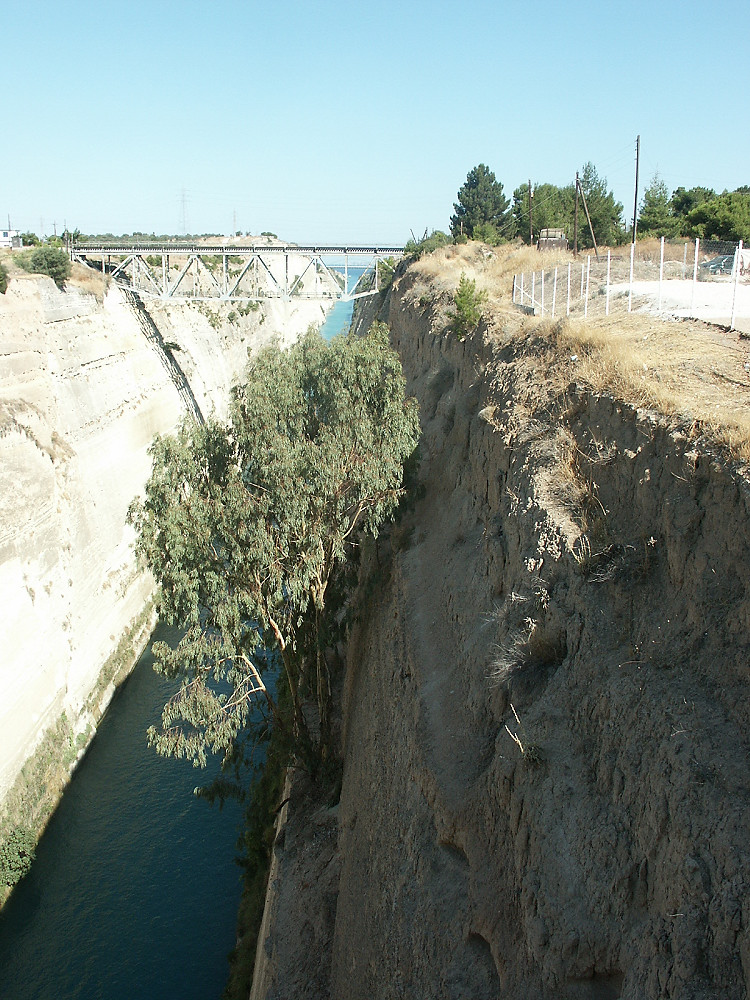

Johnnie and Oberta Baker's Photo Album Previous Gallery Next
|

The Corinth canal is 4 miles long, 70 feet wide, and 170 feet high. It connects the Ionian and Aegean seas providing a much desirable shortcut for vessels. It was built in the 19th century and was quite an engineering feat. |